计算机视觉¶
学习目标
- 知道计算机视觉的定义
- 知道计算机视觉常见任务
- 知道计算机视觉的应用场景
1.计算机视觉定义¶
计算机视觉是指用摄像机和电脑及其他相关设备，对生物视觉的一种模拟。它的主要任务让计算机理解图片或者视频中的内容，就像人类和许多其他生物每天所做的那样。
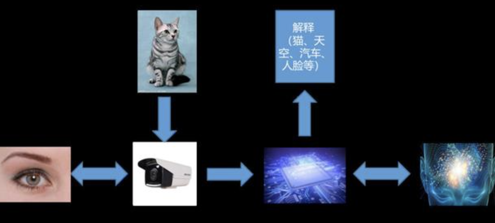
我们可以将其任务目标拆分为：
-
让计算机理解图片中的场景（办公室，客厅，咖啡厅等）
-
让计算机识别场景中包含的物体（宠物，交通工具，人等）
-
让计算机定位物体在图像中的位置（物体的大小，边界等）
-
让计算机理解物体之间的关系或行为（是在对话，比赛或吵架等），以及图像表达的意义（喜庆的，悲伤的等）
那我们在OpenCV阶段，主要学习图像处理，而图像处理主要目的是对图像的处理，比如平滑，缩放等，想、从而为其他任务（比如“计算机视觉”）做好前期工作。
2.常见任务¶
根据上述对计算机视觉目标任务的分解，可将其分为三大经典任务：图像分类、目标检测、图像分割
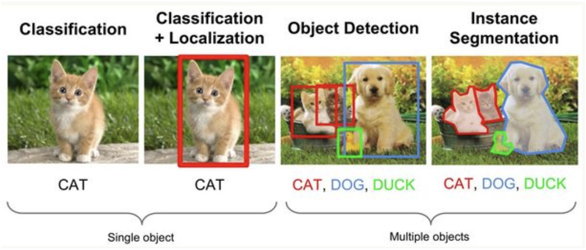
-
图像分类（Classification）：即是将图像结构化为某一类别的信息，用事先确定好的类别(category)来描述图片。
-
目标检测（Detection）：分类任务关心整体，给出的是整张图片的内容描述，而检测则关注特定的物体目标，要求同时获得这一目标的类别信息和位置信息（classification + localization）。
-
图像分割（Segmentation）：分割是对图像的像素级描述，它赋予每个像素类别（实例）意义，适用于理解要求较高的场景，如无人驾驶中对道路和非道路的分割。
接下来的课程中我们将围绕这三个任务对计算机视觉进行介绍。
3.应用场景¶
计算机视觉涉及的领域复杂，具有广泛的实际应用范围。总体而言，依赖于人工智能和机器学习，尤其是计算机视觉的创新的好处是，从电子商务行业到更经典的各种类型和规模的公司都可以利用其强大的功能，下图展示了相关的应用场景及相关的企业：
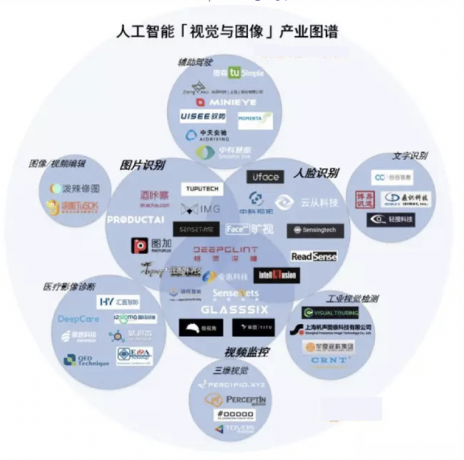
3.1 人脸识别¶
人脸识别技术目前已经广泛应用于金融、司法、军队、公安、边检、政府、航天、电力、工厂、教育、医疗等行业。据业内人士分析，我国的人脸识别产业的需求旺盛，需求推动导致企业敢于投入资金。
代表企业：Face++旷视科技、依图科技、商汤科技、深醒科技、云从科技等。
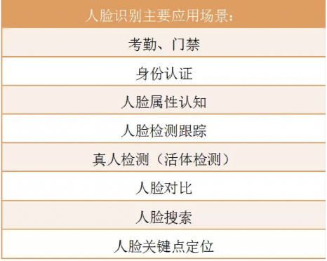
3.2 视频监控¶
人工智能技术可以对结构化的人、车、物等视频内容信息进行快速检索、查询。这项应用使得让公安系统在繁杂的监控视频中搜寻到罪犯的有了可能。在大量人群流动的交通枢纽，该技术也被广泛用于人群分析、防控预警等。
代表企业：SenseTime 商汤科技、DeepGlint 格灵深瞳、依图科技、云天励飞、深网视界等。
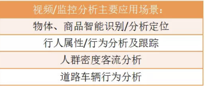
3.3 图片识别分析¶
代表企业：Face++旷视科技、图普科技、码隆科技、酒咔嚓、YI+陌上花科技等。

3.4 辅助驾驶¶
随着汽车的普及，汽车已经成为人工智能技术非常大的应用投放方向，但就目前来说，想要完全实现自动驾驶/无人驾驶，距离技术成熟还有一段路要走。不过利用人工智能技术，汽车的驾驶辅助的功能及应用越来越多，这些应用多半是基于计算机视觉和图像处理技术来实现。
代表企业：纵目科技、TuSimple 图森科技、驭势科技、MINIEYE 佑驾创新、中天安驰等。
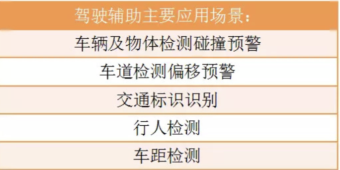
除了上述这些，计算机视觉在三维视觉，三维重建，工业仿真，地理信息系统，工业视觉，医疗影像诊断，文字识别（OCR），图像及视频编辑等领域也有广泛的应用。
5.发展历史（了解）¶
- 1963年，Larry Roberts发表了CV领域的第一篇专业论文，用以对简单几何体进行边缘提取和三维重建。
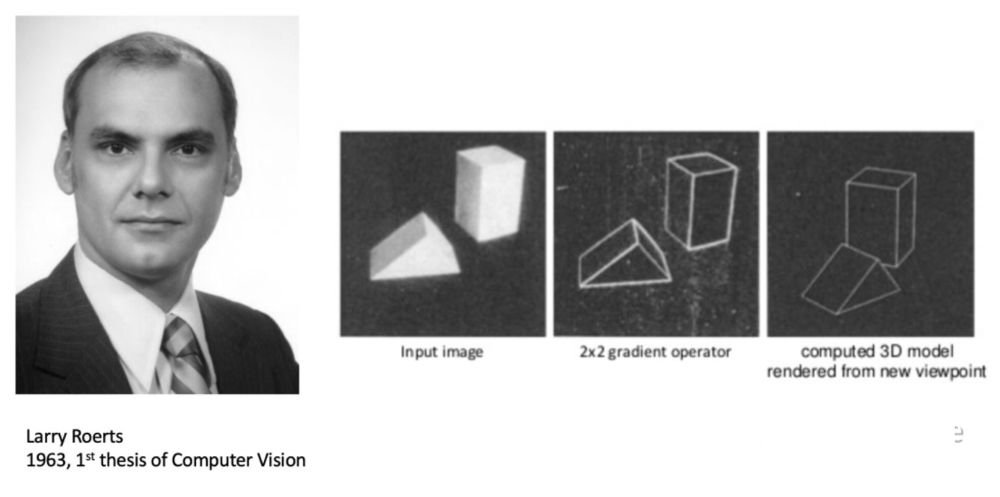
-
1966年，麻省理工学院(MIT)发起了一个夏季项目，目标是搭建一个机器视觉系统，完成模式识别(pattern recognition)等工作。虽然未成功，但是计算机视觉作为一个科学领域的正式诞生的标志。
-
1982年，学者David Marr发表的著作《Vision》从严谨又长远的角度给出了CV的发展方向和一些基本算法，其中不乏现在为人熟知的“图层”的概念、边缘提取、三维重建等，标志着计算机视觉成为了一门独立学科。
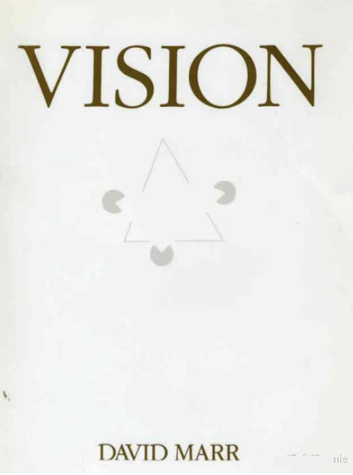
- 1999年David Lowe提出了尺度不变特征变换（SIFT, Scale-invariant feature transform）目标检测算法，用于匹配不同拍摄方向、纵深、光线等图片中的相同元素。
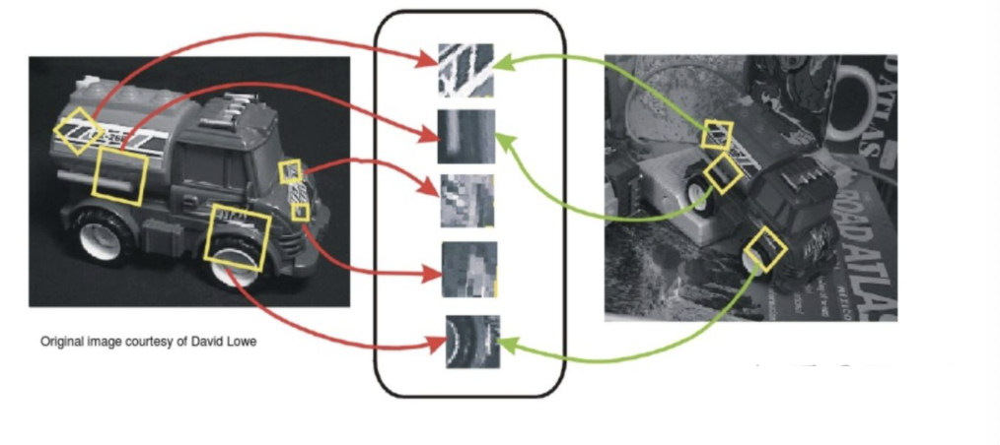
- 2009年，由Felzenszwalb教授在提出基于HOG的deformable parts model，可变形零件模型开发，它是深度学习之前最好的最成功的objectdetection & recognition算法。
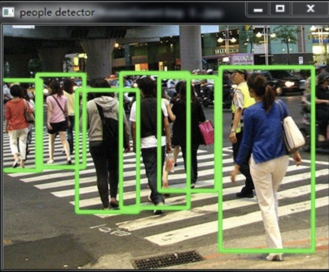
-
Everingham等人在2006年至2012年间搭建了一个大型图片数据库，供机器识别和训练，称为PASCAL Visual Object Challenge，该数据库中有20种类别的图片，每种图片数量在一千至一万张不等。
-
2009年，李飞飞教授等在CVPR2009上发表了一篇名为《ImageNet: A Large-Scale Hierarchical Image Database》的论文，发布了ImageNet数据集，这是为了检测计算机视觉能否识别自然万物，回归机器学习，克服过拟合问题。
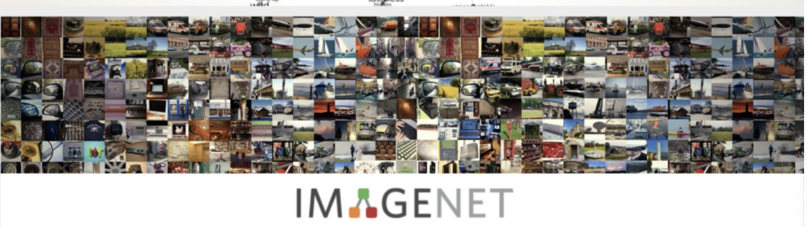
-
2012 年，Alex Krizhevsky、Ilya Sutskever 和 Geoffrey Hinton 创造了一个“大型的深度卷积神经网络”，也即现在众所周知的 AlexNet，赢得了当年的 ILSVRC。这是史上第一次有模型在 ImageNet 数据集表现如此出色。自那时起，CNN 才成了家喻户晓的名字。
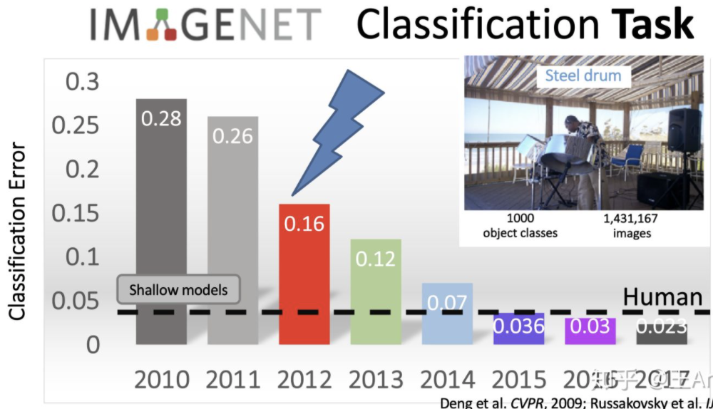
- 2014年，蒙特利尔大学提出生成对抗网络（GAN）：拥有两个相互竞争的神经网络可以使机器学习得更快。一个网络尝试模仿真实数据生成假的数据，而另一个网络则试图将假数据区分出来。随着时间的推移，两个网络都会得到训练，生成对抗网络（GAN）被认为是计算机视觉领域的重大突破。
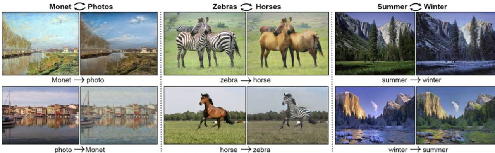
-
2018年末，英伟达发布的视频到视频生成（Video-to-Video synthesis），它通过精心设计的发生器、鉴别器网络以及时空对抗物镜，合成高分辨率、照片级真实、时间一致的视频，实现了让AI更具物理意识，更强大，并能够推广到新的和看不见的更多场景。
-
2019，更强大的GAN，BigGAN，是拥有了更聪明的学习技巧的GAN，由它训练生成的图像连它自己都分辨不出真假，因为除非拿显微镜看，否则将无法判断该图像是否有任何问题，因而，它更被誉为史上最强的图像生成器.
总结
- 计算机视觉的定义
让计算机理解图片或者视频中的内容
- 计算机视觉的任务
图像分类，目标检测，图像分割
- 计算机视觉的应用场景
人脸识别，视频监控，图片识别分析，辅助驾驶